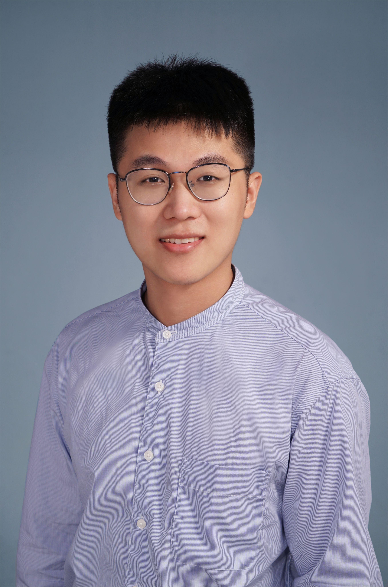

Profile
Kai Yang is an Associate Professor in the Department of Accounting, School of Economics, Shenzhen University. He received his Ph.D. in Information Systems from the College of Business, City University of Hong Kong. He serves as a committee member of both the Social Media Computing Committee and the Affective Computing Committee of the Chinese Information Processing Society of China (CIPS).
His research has been published in leading international business journals, including Information Systems Research (UTD24), and renowned AI journals such as Neurocomputing and Expert Systems with Applications. He is the Principal Investigator of a National Natural Science Foundation of China (NSFC) Young Scientists project and a Shenzhen Stable Support Program project, and has participated in NSFC General Programs and a Humanities and Social Sciences Youth Project of the Ministry of Education. He serves as an anonymous reviewer for top journals including MIS Quarterly, Information Systems Research, Journal of Computing, Decision Support Systems, and IEEE Intelligent Systems. He received the Second Prize for Outstanding Achievements in Philosophy and Social Sciences of Guangdong Province.
Research
His research focuses on business analytics, intelligent accounting, financial technology, and artificial intelligence, with a core interest in the deep integration of sentiment computing into business and information management, and in advancing the application of state-of-the-art AI techniques in finance and accounting.
Construction and optimization of multimodal sentiment computing models, extending language-based perception models to applications such as mental-health risk detection.
Intelligent decision support for finance and accounting scenarios, including credit assessment, corporate risk prediction, and ESG analysis.
Research on explainable artificial intelligence methods to address the "black box" problem of deep learning models.
Academic Background
Information Systems
Ph.D.Software Engineering
Master of EngineeringSoftware Engineering
Bachelor of Engineering20+ peer-reviewed academic publications
National and provincial research programs
Jan 2025 – Dec 2027 · CNY 300,000 · Ongoing
Dec 2023 – Dec 2025 · CNY 150,000 · Ongoing
2024
2023
2025
Get in touch
Open to academic collaboration and exchange.
School of Economics, Shenzhen University